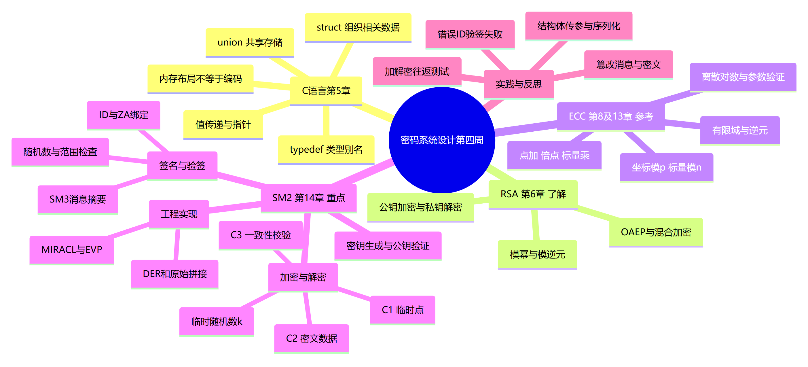

学号：20241328 姓名：蔡贸俊
代码仓库：1515720698/cryptosystem
AI 工具：OpenCode（本次会话使用 OpenAI 模型）
| 教材与章节 | 学习层次 | 本周目标 |
|---|---|---|
| 《Head First C 嗨翻 C 语言》第 5 章 | 掌握 | 结构体、联合体、typedef，以及结构体传参和指针访问 |
| 《Windows C/C++加密解密实战》第 6 章：非对称算法 RSA 的加解密 | 了解 | 公私钥分工、模运算、RSA 基本原理与填充 |
| 第 8 章：椭圆曲线密码体制 | 参考 | 有限域、点加、倍点、标量乘、椭圆曲线离散对数问题 |
| 第 13 章：SM2 算法的数学基础 | 参考 | 曲线与基点的阶、逆元、多倍点运算、点压缩及参数验证 |
| 第 14 章：SM2 算法的实现 | 重点 | 参数与公钥验证、密钥生成、SM2 加解密、签名验签及实现注意事项 |
学习主线：C 语言组织数据 → 有限域与椭圆曲线运算 → SM2 算法流程 → 利用密码库验证正确性。
材料说明：章节范围依据课程要求与教材公开目录核对；知识总结结合 OpenSSL 官方文档整理，本次未获取教材付费章节全文。实践由 AI 助手在本地实际执行，原始输出见
evidence/experiment-log.txt；苏格拉底学习部分明确区分真实交流与 AI 生成的参考回答。
结构体解决“怎样把相关的数据组织成一个整体”的问题。例如描述一段 SM2 密文时，既要保存临时点 C1 和校验值 C3，又要保存密文数据 C2 及其长度。如果把这些内容拆成互不关联的变量，很容易出现参数顺序错误或长度与缓冲区不匹配。
struct：把不同类型的成员组合起来，各成员有自己的存储空间。对象用 . 访问成员，结构体指针用 ->。typedef：为已有类型定义别名，使声明更简洁；它不会自动分配内存，也不会改变数据布局。union：成员共用一块存储，适合“同一时刻只使用其中一种表示”的场景。实际使用常配合 enum 标记当前有效成员。与密码编程的联系：C1、C2、C3 必须同时存在，适合用结构体组织，不能用一个联合体互相覆盖。 内存中的结构体布局也不能直接当成网络协议格式。
非对称密码使用公钥和私钥：发送者使用接收者公钥加密，接收者使用自己的私钥解密。公钥可以公开，但应确认它确实属于预期的接收者。
RSA 的教学原理如下：
p、q，计算 N = p × q。φ(N) = (p−1)(q−1) 互素的公开指数 e。d，使 e × d ≡ 1 (mod φ(N))。c = m^e mod N，解密为 m = c^d mod N。实际系统不能直接使用上述“裸 RSA”。RSA 加密应结合 OAEP 等合适的编码方案，签名使用独立的签名方案；不能把签名简单理解成“私钥加密、公钥解密”。RSA 的本周作用是建立非对称密码的概念，为理解 SM2 的公私钥关系作对照。
本周主要关注素域上的短 Weierstrass 曲线：
y² ≡ x³ + ax + b (mod p)
4a³ + 27b² ≢ 0 (mod p) （这里 p > 3）
有限域中的点是离散的，不能把实数坐标下的曲线图像直接当作实际密码运算。
3⁻¹ mod 17 = 6，因为 3×6 ≡ 1 (mod 17)。P+Q、2P，不是直接把两个点的横纵坐标分别相加。P+O=P，不是普通的 (0,0)。[d]G 表示把点 G 按群运算重复相加，可以通过倍点与加点高效实现。p；私钥、临时随机数、签名标量的运算通常模基点阶 n，不能混用。d 计算 P=[d]G 较容易；从 G、P 求出 d 是椭圆曲线离散对数问题，在合适参数下计算困难。教材还讨论二元扩域等内容，本周以理解其与素域的区别为主；实际练习使用 OpenSSL 的 SM2 标准曲线。
SM2 是基于椭圆曲线的一组公钥密码算法，涵盖数字签名、密钥交换、公钥加密；本章重点学习加解密与签名验签。
系统参数通常涉及有限域、曲线系数、基点 G、基点阶 n 和余因子 h。私钥是合法范围内的秘密标量 d，公钥是 P=[d]G。
对于加密密钥，私钥范围通常为 [1,n−1]；SM2 签名需计算 (1+d)⁻¹ mod n，因此签名私钥范围是 [1,n−2]。应交由正确实现的密码库生成密钥，不能使用 C 的普通 rand() 代替密码学安全随机源。
输入公钥时，需要按相应标准与接口要求验证：不是无穷远点、坐标属于相应有限域、满足曲线方程，并满足规定的阶／子群检查。数据能被解析，不等于公钥已经有效。
发送者持有接收者公钥 P_B，对消息 M 加密的核心过程是：
1. 生成新的临时随机数 k ∈ [1,n−1]
2. C1 = [k]G
3. 按算法要求检查接收者公钥，计算 [k]P_B = (x2,y2)
4. t = KDF(x2 || y2, 消息比特长度)；若 t 全为零则重新选择 k
5. C2 = M XOR t
6. C3 = SM3(x2 || M || y2)
7. 按约定格式编码并输出密文
其中 || 表示字节串拼接，坐标编码必须遵循规范，不能随意省略前导零。
| 分量 | 作用 | 本周应理解的关键点 |
|---|---|---|
C1 |
传递临时曲线点 | 可以公开，但解密时必须验证 |
C2 |
掩码处理后的消息 | 与明文等长，是二进制数据 |
C3 |
用于检验恢复消息是否一致 | 应在校验通过后才接受明文 |
临时随机数 k 每次应重新生成，所以同一公钥、同一明文的两次加密，密文通常不同。
接收者从密文取出并验证 C1，使用私钥 d_B 计算：
[d_B]C1 = [d_B]([k]G) = [k]([d_B]G) = [k]P_B
因此收发双方可以得到相同的共享点，进而得到相同的 KDF 输出 t。接收者恢复 M'=C2 XOR t，再计算 u=SM3(x2 || M' || y2)。只有 u 与 C3 一致且其他检查均通过，才接受明文。
常见接口可能采用原始拼接的 C1C3C2 或 C1C2C3，也可能使用 ASN.1 DER。顺序与编码是接口约定，不能仅根据扩展名或密文总长度猜测。
SM2 签名不是对消息直接做一次普通 SM3，也不是对摘要进行“私钥加密”。常见 SM2/SM3 配合方式先计算：
ZA = SM3(ENTLA || IDA || a || b || xG || yG || xA || yA)
e = SM3(ZA || M)
ENTLA 表示身份标识的比特长度编码，ZA 将身份标识、曲线参数及签名者公钥绑定到签名过程。ID 不是秘密口令，但签名与验签两端必须使用相同的字节序列。
签名的核心公式是：
(x1,y1) = [k]G
r = (e+x1) mod n
s = ((1+dA)⁻¹ × (k−r×dA)) mod n
若出现 r=0、r+k=n 或 s=0 等不满足规范的情况，需要重选随机数重新计算。验签先检查 r、s 的范围，再计算 t=(r+s) mod n；若 t=0 则拒绝。随后计算 [s]G+[t]P_A，并按算法检查所得横坐标与 e 形成的值是否等于 r。
本周实验显式使用 distid:20241328，避免依赖不同工具的默认 ID。修改消息或修改 ID 都应导致验签失败。
教材 14.11 介绍 MIRACL，14.12、14.13 进一步讨论 SM2 加解密和签名验签实现。阅读时应沿着“大整数运算 → 有限域运算 → 点运算 → 完整算法”的层次理解，注意随机数、错误检查与资源释放。
实际开发优先使用维护良好的密码库。本周用 OpenSSL 3.x 命令验证算法行为；C 程序后续可使用 EVP_PKEY_encrypt/decrypt 与 EVP_DigestSign/Verify 系列接口。签名 ID 可通过 EVP_PKEY_CTX_set1_id 设置，所有分配、初始化与密码运算都应检查返回值。
fwrite(&obj,sizeof obj,1,fp) 就得到跨平台 SM2 编码。取教学曲线 y²=x³+2x+2 (mod 17)，点 G=(5,1)。倍点斜率为：
λ = (3×5²+2) × (2×1)⁻¹ mod 17
= 77 × 9 mod 17 = 13
x(2G) = λ²−2×5 mod 17 = 6
y(2G) = λ×(5−6)−1 mod 17 = 3
所以 2G = (6,3)
这个例子说明：有限域中的除法是乘逆元，倍点也不是 (10,2)。这只是便于手算的教学曲线，实际 SM2 应使用规定参数。
| 算法 | 主要角色 | 与本周内容的联系 |
|---|---|---|
| SM2 | 公钥加密、数字签名、密钥交换 | 本周重点；解决公私钥密码相关任务 |
| SM3 | 密码杂凑 | 在 SM2 中参与 ZA、消息摘要、KDF 和 C3 计算 |
| SM4 | 对称分组密码 | 适合配合合适的模式处理大量业务数据 |
大文件通常采用混合加密：使用对称密钥加密主体数据，再用公钥机制保护或协商该密钥。还应绑定接收者、算法参数和上下文，不能只把算法拼接起来就认为系统完整。
第三周报告曾把“末尾记录消息长度”说成防止长度扩展攻击的关键，这不准确。SM3、SHA-256 的这种填充并不会消除长度扩展问题。相关扩展形式包含原消息的填充，即 H(K || M || pad || X)，不能省略 pad 简写成 H(K || M || X)。
HMAC 的安全设计来自规范的双层构造，不能据此把 SM2 的 C3、HMAC、普通 SM3 当作同一种东西。上一周关于旧 EVP_MD_CTX_create/destroy 名称“一定引发 OpenSSL 3.x 弃用告警”的说法也不严谨，它们在常见头文件中是兼容别名；具体是否告警要检查实际声明与编译输出。
“能解密回来”“能验签通过”只能说明正常路径可用。本周补充以下反向检查：
这些检查把“参数参与运算”和“错误能被发现”转化为可以观察的结果。
mindmap
root((密码系统设计第四周))
C语言第5章
struct 组织相关数据
typedef 类型别名
union 共享存储
值传递与指针
内存布局不等于编码
RSA 第6章 了解
公钥加密与私钥解密
模幂与模逆元
OAEP与混合加密
ECC 第8及13章 参考
有限域与逆元
点加 倍点 标量乘
坐标模p 标量模n
离散对数与参数验证
SM2 第14章 重点
密钥生成与公钥验证
加密与解密
临时随机数k
C1 临时点
C2 密文数据
C3 一致性校验
签名与验签
ID与ZA绑定
SM3消息摘要
随机数与范围检查
工程实现
MIRACL与EVP
DER和原始拼接
实践与反思
加解密往返测试
错误ID验签失败
篡改消息与密文
结构体传参与序列化

独立 Mermaid 源文件：assets/week4-mindmap.mmd。截图由上述代码实际渲染生成。
学习方式：围绕两个不易理解的概念，按“一次一个问题”组织苏格拉底式学习。
记录说明：实际交流中，我对“同一公钥和明文两次加密，密文是否相同”的回答是“还不清楚，请引导”。之后委托 AI 整理完整学习材料。下面的“参考回答”与评价是 AI 生成的学习示例，不冒充已经完成的个人逐轮回答。
提示词：我在学习 SM2 加密中的临时随机数与共享点，请你以苏格拉底的方式对我进行提问，一次一个问题。先从同一条消息加密两次的结果讲起。
AI 问题 1：同一条消息用同一把公钥加密两次，你认为密文应该相同吗？为什么？
实际回答：还不清楚，请引导。
AI 引导：SM2 每次加密都会生成临时随机数 k。即使公钥与明文相同，新的 k 通常不同，由它计算的临时点和掩码也会变化，因此密文通常不同。
AI 问题 2：如果固定 k，同一接收方的两条等长消息使用同一个掩码 t，把两段 C2 异或会得到什么？
参考回答：(M1 XOR t) XOR (M2 XOR t) = M1 XOR M2。掩码被抵消，攻击者获得两条明文的异或关系；如果知道其中一条，就可以恢复另一条。因此不能固定或不当重复使用 k。
AI 问题 3：接收者不知道 k，为什么仍然能得到发送者用来生成掩码的那个点？
参考回答：密文包含 C1=[k]G。接收者用私钥算 [dB]C1，与发送者算 [k]PB 相等，因为 PB=[dB]G。接收者不必先求出 k。
AI 问题 4：攻击者也看到 G、PB、C1，为什么不能照着接收者的方法恢复这个点？
参考回答：攻击者没有 dB 或 k。从公开点求私有标量涉及离散对数问题；从 G、[dB]G、[k]G 计算 [kdB]G 是相关的计算 Diffie–Hellman 问题。应区分两者，不能把它们未经说明就视为同一个问题。
AI 问题 5：解出候选明文后，为什么还要检查 C3？
参考回答：恢复出的字节可能来自被修改的密文。需要重新计算 C3 并比较，只有全部校验通过才能接受明文。但这并不证明发送者是谁，因为任何人都能用公钥加密。
AI 对参考回答的评价：该推理链覆盖随机性的作用、重复掩码泄露、解密双方等式以及 C3 的能力边界。后续自测应能不看公式解释 [dB]C1=[k]PB，并区分“消息一致性”与“发送者身份认证”。
提示词：我在学习 SM2 签名中的 ID、ZA 与消息摘要，请你以苏格拉底的方式对我进行提问，一次一个问题，帮助我解释“公钥和消息没变却验签失败”的原因。
AI 问题 1：如果签名只是对 SM3(M) 做运算，修改消息之外的 ID 会影响验签吗？
参考回答：在这个假设下不会。但 SM2 实际先计算与 ID 有关的 ZA，再计算 SM3(ZA || M)，因此 ID 也参与决定最终摘要。
AI 问题 2：ZA 为什么不只包含 ID，还包含曲线参数和公钥？
参考回答：它把身份标识与具体算法参数、公钥绑定到签名上下文中。不能只看一段相同的消息，就忽略它对应的身份和公钥信息。
AI 问题 3：两端公钥、消息、签名字节都相同，一端 ID 为 20241328，另一端为 wrong-id，应观察到什么？
参考回答：两端得到的 ZA 和摘要不同，验签应失败。应统一双方的 ID 字节，而不是删掉 ID 检查或跳过验签。
AI 问题 4：ID 是不是必须保密的密码？把 ID 改成自己的姓名，是否就能证明这是本人的公钥？
参考回答：ID 是参与签名的身份标识，不是秘密口令。自己设置 ID 不能证明公钥属于谁，现实身份与公钥的绑定仍需要可信证书、可信分发或其他认证机制。
AI 问题 5：如何设计实验，确认失败确实与 ID 不一致有关？
参考回答：保持消息、公钥和签名不变，只改验签 ID；观察失败后恢复原 ID，再观察成功。这是控制变量验证。然后另做只改消息的实验，区分两种失败原因。
AI 对参考回答的评价：该回答能把 ID、ZA、消息摘要和验签结果联系起来，也识别了“ID 绑定”不等于“现实身份已经可信”。实际自测时，应能独立解释并复现成功—失败—成功的结果。
本节为 AI 驱动的实际复现记录：由 AI 助手在当前 Windows x64 环境执行，不将前几周报告中的 Linux 环境版本直接当作本次环境。
OpenSSL 3.5.9 29 Sep 2026
GCC 11.5.0（MinGW-w64）
Node.js v22.22.0（运行验证脚本和导出文档）
OpenSSL 使用 FireDaemon 提供的便携发行包，下载 SHA-256 与提供方公布值一致。实践只生成临时测试密钥，执行结束后删除。关键命令如下，完整流程在 code/run_experiments.mjs，Linux 复现脚本在 code/sm2_demo.sh。
openssl genpkey -algorithm SM2 -out private.pem
openssl pkey -in private.pem -pubout -out public.pem
openssl pkeyutl -encrypt -pubin -inkey public.pem -in message.txt -out cipher.der
openssl pkeyutl -decrypt -inkey private.pem -in cipher.der -out recovered.txt
实际检查结果：
| 检查项 | 观察结果 |
|---|---|
| 加密后解密，与原始文件逐字节比较 | 一致 |
| 对同一消息、公钥连续加密两次 | 密文不同 |
| 修改密文末尾一个字节后解密 | 返回非零退出码，提示 invalid digest |
| 正确 ID 验签 | Verified OK |
| 错误 ID 验签 | Verification failure |
| 恢复正确 ID 验签 | Verified OK |
| 修改消息后验签 | Verification failure |
C 示例启用 -Wall -Wextra -Werror 编译 |
通过 |
复现现象：签名时设置 ID 为 20241328，验签时故意改为 wrong-id，产生 Verification failure。
向 AI 提问：SM2 的公钥、消息和签名都没变，为什么只改一个 ID 就失败？应检查哪一层？
AI 分析与处理：先核对签名参数，再核对消息字节。SM2 的 ID 参与 ZA 计算，因此不一致的 ID 会使最终摘要不同。保持文件不变，把验签 ID 改回签名时使用的值。
openssl dgst -sm3 -sign private.pem -sigopt distid:20241328 -out signature.der message.txt
# 故意使用错误 ID：失败
openssl dgst -sm3 -verify public.pem -sigopt distid:wrong-id -signature signature.der message.txt
# 改回同一 ID：成功
openssl dgst -sm3 -verify public.pem -sigopt distid:20241328 -signature signature.der message.txt
实际结果：错误 ID 返回退出码 1；恢复后输出 Verified OK、退出码 0。
经验总结：密码调用是否正确，取决于消息、密钥、算法参数与上下文是否一致；不能只检查消息和公钥。
复现观察：对 OpenSSL 输出执行 asn1parse，发现实际是一个 SEQUENCE，包含两个 INTEGER 与两个 OCTET STRING，而不是可以从第 0 字节起直接切出 65 字节 C1 的裸拼接。
向 AI 提问：为什么曲线坐标是 256 位，DER 解析出的坐标整数却可能占 33 字节？
AI 分析与处理：DER 的整数采用带符号编码，正整数最高位为 1 时可能增加一个前导 00；此外还有 Tag、Length 等编码开销。应先按 ASN.1 结构解析，再按目标接口规定转换坐标和字段顺序。
openssl asn1parse -inform DER -in cipher1.der
本次解析出的字段长度为：
SEQUENCE
INTEGER 32 bytes （C1 的 x 坐标）
INTEGER 33 bytes （C1 的 y 坐标，含正数符号补位）
OCTET STRING 32 bytes （C3）
OCTET STRING 31 bytes （C2，本次消息为 31 字节）
验证方式：同一 DER 文件交给 openssl pkeyutl -decrypt 正常恢复原文；原始日志保留完整 TLV 偏移和字段值。本次验证了 OpenSSL 的 DER 结构，未把“跨 GmSSL 转码成功”列为已完成结果。
经验总结：算法相同不等于编码相同。之前学过的 ASN.1／DER，本周直接影响密文能否被正确解析。
复现现象：wrong_change(h) 在函数内部把 length 改为 99，函数返回后原对象仍是 5。
向 AI 提问：结构体成员的赋值语句已经执行，为什么调用者看不到修改？
AI 分析与处理：整个结构体按值传参，修改的是副本。改为传地址并使用 -> 访问成员。
static void correct_change(PacketHeader *h)
{
h->length = 99;
}
/* 调用：correct_change(&h); */
实际输出：
after pass-by-value: length=5
after pass-by-pointer: length=99
经验总结：需要修改调用者数据时，应明确传入可写地址；只读接口可用 const 指针表达约束。结构体中包含指针时还要考虑浅拷贝和所有权。
复现现象：一个 unsigned char 与一个 uint32_t 成员合计 5 字节，本次编译环境下 sizeof(PacketHeader) 却是 8；包含 00 的 4 字节数组，strlen 只返回 1。
向 AI 提问：能不能用结构体原始内存保存协议头，用 strlen 计算密文长度？
AI 分析与处理：结构体会因对齐产生填充；strlen 只适用于以零字节结尾的字符串。协议头应逐字段按明确字节序序列化；密文则使用缓冲区与显式长度。
实际输出：
header: sizeof=8, fields=5, length_offset=4
serialized: 01 00 00 00 63
binary: strlen=1, actual_bytes=4
01 是版本，00 00 00 63 是将 99 按大端编码得到的长度。结构体的具体 sizeof 与偏移依赖平台，不能把本机的 8 字节当作所有系统的规定。
经验总结：密码程序处理的是精确字节串。缓冲区长度、字节序、指针生命周期与算法公式同样重要。
本周应建立的核心认识是：SM2 的正确性来自椭圆曲线群运算与规范化算法流程，安全性还依赖参数验证、随机数、身份标识、编码及错误处理。
通过本周整理，可以把前三周的学习串联起来：结构体用于组织数据，ASN.1／DER 负责明确编码，SM3 参与摘要与一致性检查，SM2 提供公钥密码能力。下一步阅读第 14 章源码时，应逐项对照“密钥从哪里来、临时随机数如何生成、每一步失败如何退出、字节串如何编码”，而不只是看正常路径能否运行。
20241328蔡贸俊《密码系统设计》.md。20241328蔡贸俊《密码系统设计》第4周.pdf。assets 文件夹。code/ 保存 C 示例与复现脚本，evidence/experiment-log.txt 保存实际输出。